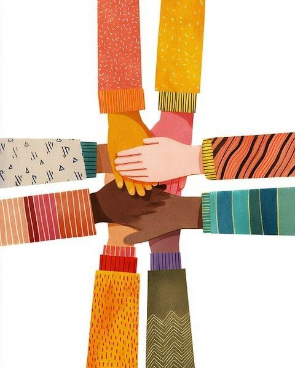

¿Controlamos la tecnología o ella nos controla?
Distintas formas de entender la tecnología.
EXPLORAR ↗
02 / NUESTRO EQUIPOLas perspectivas que compartimos como equipo.
EXPLORAR ↗ 03 / FUTUROCómo imaginamos el futuro tecnológico.
EXPLORAR ↗La tecnología actualmente es parte de nuetra vida cotidiana, pero no todos lo experimetamos o vivimos de la misma manera. Por medio de estas entrevistas buscamos lograr reflexionar y entender como las personas persiven el impacto de la tecnología en el presente y cómo se la imaginan en un futuro.